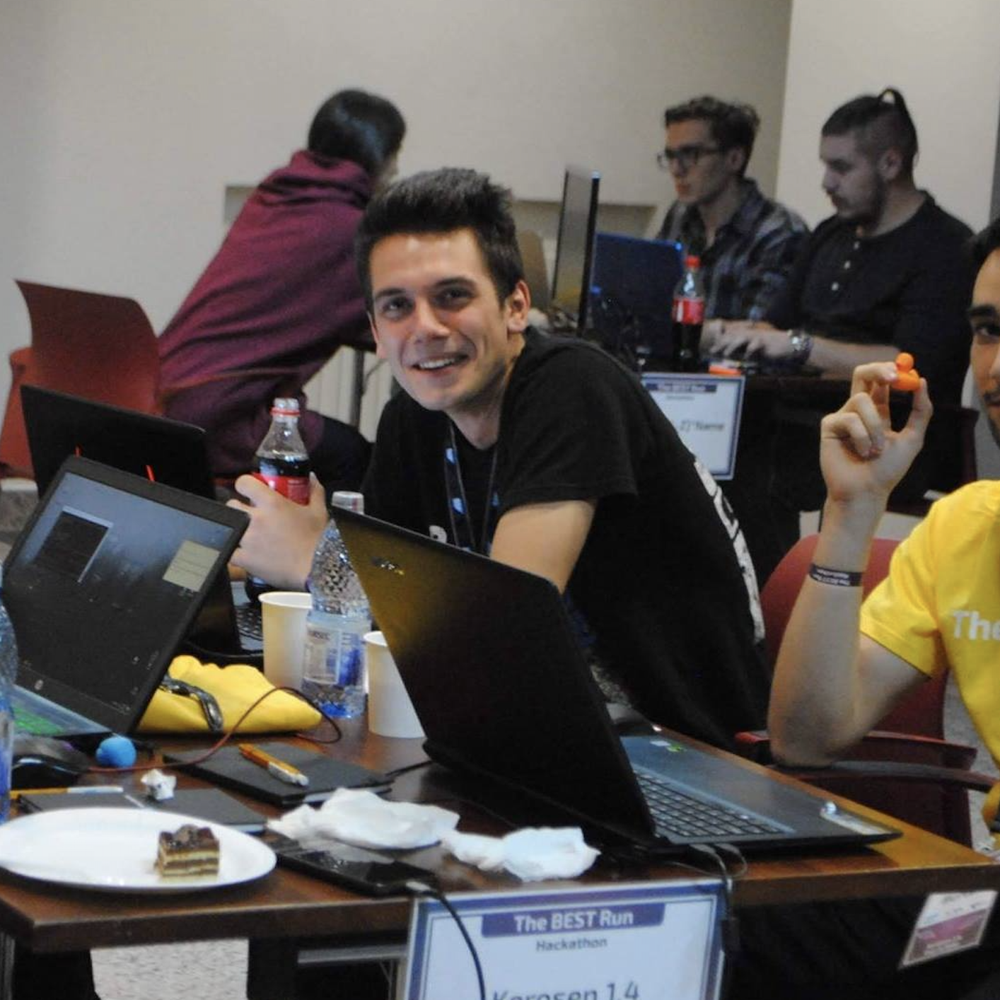

<div class="about-screen">
    <!-- News jumbotron -->
    <div id="aboutElement" class="text-center hoverable p-1">
        <!-- Grid row -->
        <div class="row">
            <!-- Grid column -->
            <div class="col-md-4 offset-md-1 mx-3 my-3 image-row">
                <!-- Featured image -->
                
            </div>
            <!-- Grid column -->

            <!-- Grid column -->
            <div class="col-md-7 text-md-left ml-3 mt-3 about-info">
                <h4 class="h4 mb-4">Hi! I'm Cătălin.</h4>

                <p>
                    I'm a Sr. Software Development Engineer for VIAVI and before this I've worked for three years as a Development Consultant for SAP. 
                    In the meantime, I've got a BSc in Systems Engineering at the Faculty of Automatic Control and Computer Science of the 
                    Politehnica University of Bucharest and I'm currently pursuing a MSc in Information Managament and Protection ("MPI")
                    at the same university.
                    <br><br>
                    In my current position I'm working on some interesting microservices and interfaces for enabling customers to check
                    the status of their network. My day to day job involves things like Spring Boot, Bamboo, Kubernetes, Docker, Angular, Cucumber and so on...
                    <br><br>
                    At SAP I was mainly working on SAP Commerce Cloud implementations that involved 
                    backend development using the Spring Boot framework and frontend with good old JSPs, but also some Spartacus. 
                    <br>
                    During my extra time at SAP, I've worked on some Innovation and IoT projects on the SAP BTP (Business Technology Platform) 
                    using technologies like Spring, JAX-RS, UI5, NodeJS. I've also been involved in performance testing and improving SAP File Service 
                    for which I've contributed quite a lot, using technologies like Gatling and JMeter for testing and implementing a custom metric 
                    for the CF (Cloud Foundry) Autoscaler service based on ingress bytes.
                    <br><br>
                    During the rest of the day, I'm usually working on some personal projects and learning new technologies 
                    (like this website that was entirely developed using Angular). Apart from this, I'm passionate about IoT and about that 
                    I've built a project for monitoring and protecting the forests remotely using sound classification for detecting 
                    things like people, engines, chainsaws and other dangerous sounds. I didn't got time to make a proper presentation, but the 
                    project is similar to <a href="https://www.youtube.com/watch?v=xPK2Ch90xWo" target="_blank">this</a>, including solar panels for being fully 
                    autonomous in an Edge Computing architecture.
                    <br>
                    I'm also a fan of Home Assistant and I have a lot of smart things in my home, even if most of them lie unused.
                    <br><br>
                    Besides, I'm a fan of ML and AI, but currently I'm just learning the basics. You can find more about me on the social networks below.
                </p>

            </div>
            <!-- Grid column -->

        </div>
        <!-- Grid row -->

    </div>
    <!-- News jumbotron -->
</div>